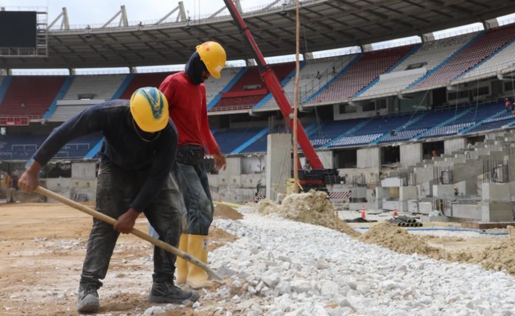
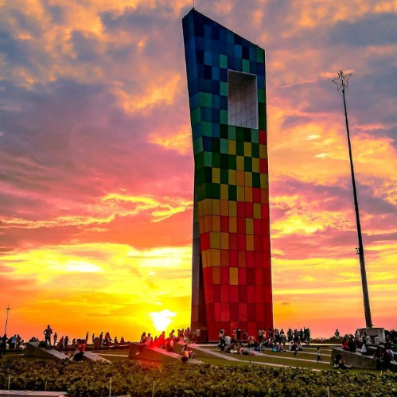
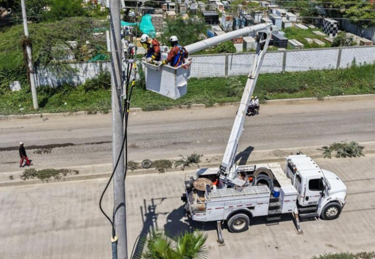

Deportes · Copa Sudamericana 2026
CONMEBOL destaca el "gran avance de obras" en el Metropolitano de Barranquilla
La CONMEBOL realizó una visita técnica exhaustiva al Estadio Metropolitano Roberto Meléndez de cara a la final de la Copa Sudamericana 2026. El equipo de expertos analizó el estado de la gramilla, los sistemas de drenaje, la iluminación LED y la seguridad en las tribunas. El balance es positivo: los escenarios avanzan para ofrecer una experiencia de primer nivel a los aficionados en la final internacional.
22 abr. 2026 · TDI Colombia

Ciudad
Barranquilla se consolida como ciudad abierta al mundo
La ciudad recibió visitas oficiales internacionales en la semana del 21 de abril, reafirmando su vocación de ciudad puerto con proyección global.
21 abr. 2026 · Alcaldía de Barranquilla
Cultura
Abren convocatoria "Talento de Barrio" para cantantes barranquilleros
La ciudad busca nuevas voces en su tradición musical del Caribe con esta convocatoria abierta para artistas emergentes de los barrios.
14 abr. 2026 · El Heraldo
